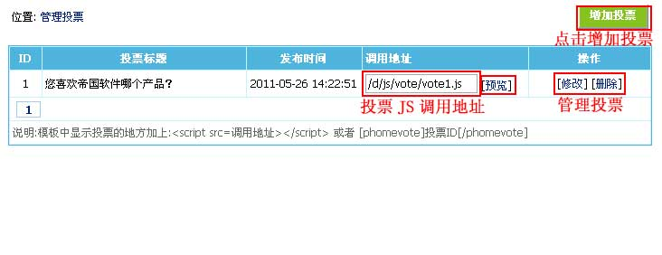

| 网站的投票管理。 |
|
||
| 一、投票系统说明 |
| 前台投票调用方式：同时支持标签调用和JS调用 |
| 标签调用投票：用投票调用标签（[phomevote]投票ID[/phomevote]） |
| JS调用投票：<script src="投票JS文件地址"></script>，比如：<script src="http://127.0.0.1/d/js/vote/vote1.js"></script> |
| （以上两种方式选其一，页面经常更新的可以用标签调用，页面不经常更新的推荐用JS调用） |
| 投票调用结果显示示例，如下图： |
| 二、增加投票 | ||||||||||||||||
| 1、登录后台，单击“插件”菜单，选择“增加投票”子菜单，进入增加投票界面： | ||||||||||||||||
| 2、进入增加投票界面，如下图： | ||||||||||||||||
|
| 三、管理投票 | ||
| 1、增加投票后，返回“管理投票”界面（见下图）： | ||

|
| 相关内容 |
| 重复投票时间限制：如果不限制同一IP只能投一次票，那么可对重复投票的时间间隔做出限制。 操作步骤：单击菜单“系统”》“系统设置”》“系统参数设置”，进入参数设置界面，选择“信息设置”，进行“重复投票时间限制”设置。 |